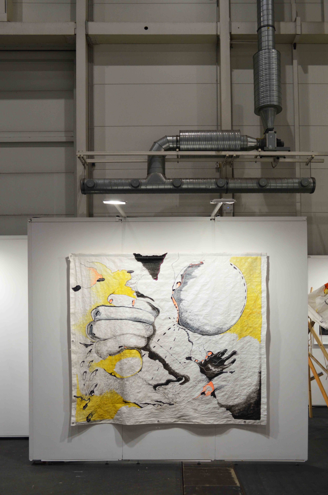

SELECTED WORKS
My artistic practice investigates the dynamics of human mutability, psychogeography, and the deconstruction of the human form within post-migratory space. Through a multidisciplinary methodology that weaves together expanded drawing, site-adaptive installation, experimental photography, and moving image, I approach the body not as a static anatomical entity, but as a territory in continuous negotiation and mutation.
My work takes the experience of displacement and the liminal condition of the subject in transit as its primary point of departure. I am interested in exploring how geography, displacement, and new cultural environments alter the biological and psychological architecture of the individual. In this inquiry, the graphic line and the mark of color operate as gestural extensions of memory and physical vulnerability, while the audiovisual content records the performativity of the body, turning it into a temporal map.
My space-adaptive works transform the exhibition environment into a tactile refuge for perceptual resistance. By employing non-conventional supports—suspended tarps, wooden structures, and textile materials—the artwork transcends the two-dimensional plane to project itself into the room as an explorable environment. At this intersection between the immediacy of the mark and spatial scale, I challenge the boundaries of bodily perception, placing the viewer within a landscape where human identity is revealed as liquid, fragmented, and in constant metamorphosis.


Troscurpos: De la Corona al Viento
(From the Crown to the Wind), 2024-2026
Single-channel video, black and white, sound, 5:12 min
Troscurpos destabilizes the boundaries between body, memory, and geographic territory. A digitally fabricated lithographic image of an eroded crown emerges as an ambiguous archaeological trace, introducing a symbol whose history remains unresolved. Macro sequences of tactile gestures—hands interacting with skin, arms folding inward—dissolve the human figure into a fluid, shifting landscape. As the edit introduces elements of the sea, dense mist, and tarp-covered machinery, the body enters a state suspended between distinct historical and post-migratory temporalities. A soundscape of nocturnal insects, moving water, clashing chains, and resonant percussion expands the visual field, transforming the moving image into a physical atmosphere of heavy anticipation.
Screenings – 2026: Blackwood Filmfestival – Kurzfilmsause Freiburg, Freiburg (Germany) • STARPTELPA Riga Performance Festival (Latvia) • Public Shorts Video Festival, Berlin (Germany) – 2025: Special Mention – Festival de Cine de Villa De Leyva (Colombia) • T.I.V.A. Tirana International Video Art Festival (Albania) • KURZFILMTAG, KulturEnergieBunker, Hamburg (Germany) • Écran Libre New Media Festival (Canada) • WNDX Festival of Moving Image (Canada) • Speak Volumes, Out of the Blue Cinema, Paris (France) • Mientras tanto Cine (Uruguay) • Movement and Light, GISELA, Berlin (Germany) • Tendermesh Film Fest, Berlin (Germany) – 2024: Rare Effect Festival, Lisbon (Portugal) • Intermediaciones – Video Art and Experimental Video Showcase, Medellín (Colombia).
▶ Video excerpt
Stills


La Grieta (The Rift), 2025
Wood, acrylic, marker, terracotta, graphite, 131.8 × 109.2 × 8.4 cm
This assemblage reorganizes discarded wooden fragments collected from a workshop in Hyderabad (India) into a rigorous visual system that hovers between architectural object, extended drawing, and landscape. Graphic markings referencing industrial wheels, rooftops, and mountain ridges cut across the grain. An unreadable Hindi distribution stamp found on the wood is stripped of its linguistic function, treated purely as visual material, and extended into the composition through delicate drawing. An irregular, sharp opening punctures the frame, incorporating the physical gallery wall and structural absence as active elements within the composition. The work materializes the condition of displacement by turning structural residue into a liminal architecture.
Installation view, Topographies of Tents, Terracotta and Time, Srishti Art Gallery, India, 2025. Curated by Mathew Partridge


Corporeo, 2020
3-channel video installation, color, black and white, sound, loop
This installation isolates close-up anatomical details—the movement of the throat and tongue—and strips them of their biological function. Enlarged and displaced, these bodily fragments manifest as geological formations, alien landscapes, or unfamiliar kinetic objects. Projected simultaneously across three channels, the images establish a tight physical dialogue with the architecture. The structural proximity of the loops ensures that the visual transformation on one screen immediately recontextualizes the adjacent images. The work treats the body not as a subject of representation, but as raw, malleable material that shifts the viewer’s spatial perception.
▶ Video excerpt
Installation view, körpE[h]RLICH, xpon-art, Hamburg, 2020
Stills


From the series Lonas del Jardín, 2021-ongoing
Found construction tarp, acrylic paint, ink, marker, teip, rope, light, variable dimensions
Built from weathered construction tarps salvaged in Germany, this ongoing series operates as a body of site-adaptive installations. Each iteration preserves the material’s operational tears, stains, and structural repairs, allowing its physical history to reconfigure across different spatial environments. Graphic ink tracks and enlarged configurations of human fingers, alongside suggestive forms of heads or hands, intersect with industrial markings, tracing bodily residues across the surfaces. Suspended, folded, or pooling onto the floor, the tarps function simultaneously as image, object, and spatial volume. Through variations in gravity, structural tension, and light, the series continuously adapts to its architectural contexts—transforming utilitarian surfaces into immersive environments of shelter and exposure.
Installation view, Historische Zehntscheune Stadthagen, Germany, 2022



Entdeckung, 2021. From Lonas del Jardín (Serie)
Mixed media on tarp, (marker, ink, charcoal, acrylic paint)
187 × 213 cm


Resguardo y Presencia (Shelter and Presence), 2012–ongoing
Video and photo-actions, textile, variable dimensions
Resguardo y Presencia is an ongoing inquiry into concealment as a state of psychological refuge and physical boundary. Across distinct iterations—ranging from open-air video-performances activated by wind and bodily tension to atemporal, static textile displays within physical spaces—a persistent gesture remains: the body enveloped, sheltered, or altered by fabric. The material acts as an adaptive skin that redrafts human contours, transforming the subject into an ambiguous volume. Neither an act of complete disappearance nor a passive disguise, the series positions shelter as a deliberate, tactical retreat into self-contained autonomy.
Exhibition view, Resguardo y Presencia, Künstlerhaus Vorwerk-Stift Hamburg, 2022
Resguardo, 2022
Textile, chair, variable dimensions
Resguardo y Presencia - acción n 1, 2015
Single-channel video, color, sound, 5:19 min
▶ Video excerpt
Stills


Still

The Core, 2026–ongoing
Moving image, digital archive, installation research
The Core represents an ongoing synthesis of a ten-year visual investigation, compiling 54 autonomous video loops into an expanding grid of 66 elements (The Core Grid). Rather than treating these moving images as isolated digital files, the project frames them as a cumulative geography of alienation and mental shelter. Minimal bodily gestures, skin textures, and subtle movements are isolated, loop-structured, and serialized, stripping the figure of immediate legibility to build a private, self-contained perceptual refuge. Moving from screen-based editing toward physical installation, the project tests how projected light, optical lenses, and translucent surfaces can translate an intimate digital archive into an immersive spatial environment.
The Core — Grid view, 2026-ongoing (silent)
▶ Video
The Core — Detail, 2026 (silent)
▶ Video